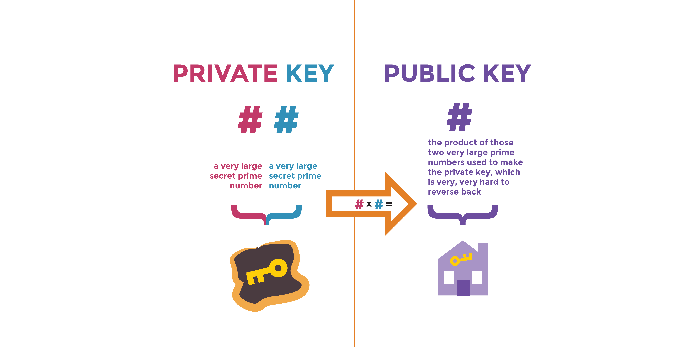
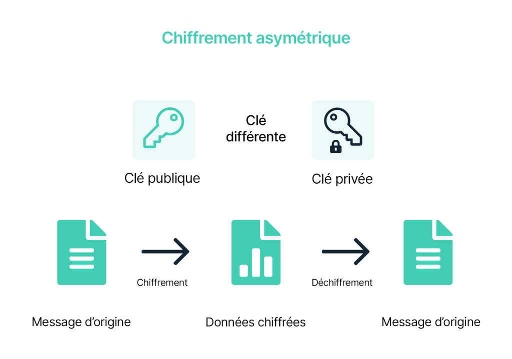

Fonctionnement de l'infrastructure à clé publique
L'infrastructure à clé publique (PKI) est un système qui permet de sécuriser les communications électroniques. Voici comment il fonctionne :
Génération des clés
Le processus de PKI commence par la génération d'une paire de clés : une clé publique et une clé privée. La clé publique est partagée avec d'autres personnes afin qu'elles puissent chiffrer les messages destinés à la personne qui détient la clé privée. La clé privée doit être gardée secrète.
Signature numérique
La signature numérique permet de vérifier l'authenticité d'un document. Elle est créée en utilisant la clé privée de la personne qui signe le document. Lorsque la personne qui reçoit le document souhaite vérifier son authenticité, elle utilise la clé publique de la personne qui a signé le document pour vérifier la signature.

Chiffrement des données
Le chiffrement des données permet de protéger les données confidentielles en les rendant illisibles pour toute personne qui n'a pas la clé de déchiffrement. Dans une PKI, les données sont chiffrées en utilisant la clé publique de la personne à qui les données sont destinées. Seule la personne qui possède la clé privée correspondante peut déchiffrer les données.
Authentification
L'authentification permet de vérifier l'identité d'une personne. Dans une PKI, l'authentification se fait en utilisant la clé publique de la personne à qui l'on souhaite s'authentifier. Si la personne possède la clé privée correspondante, elle pourra prouver son identité.